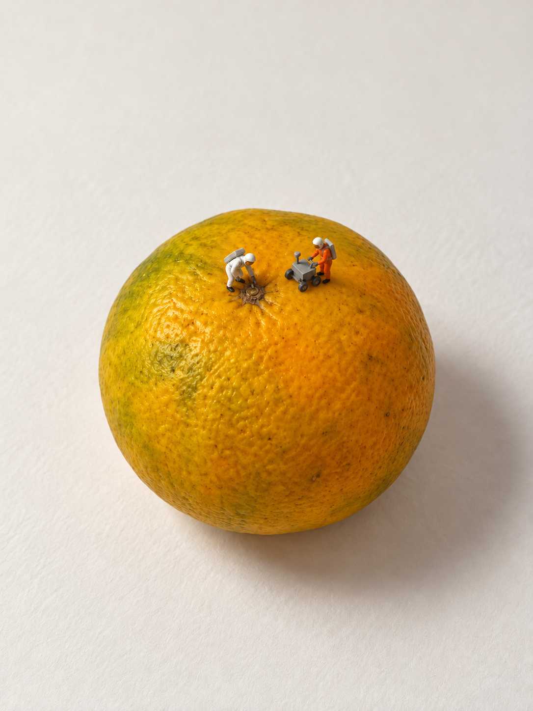
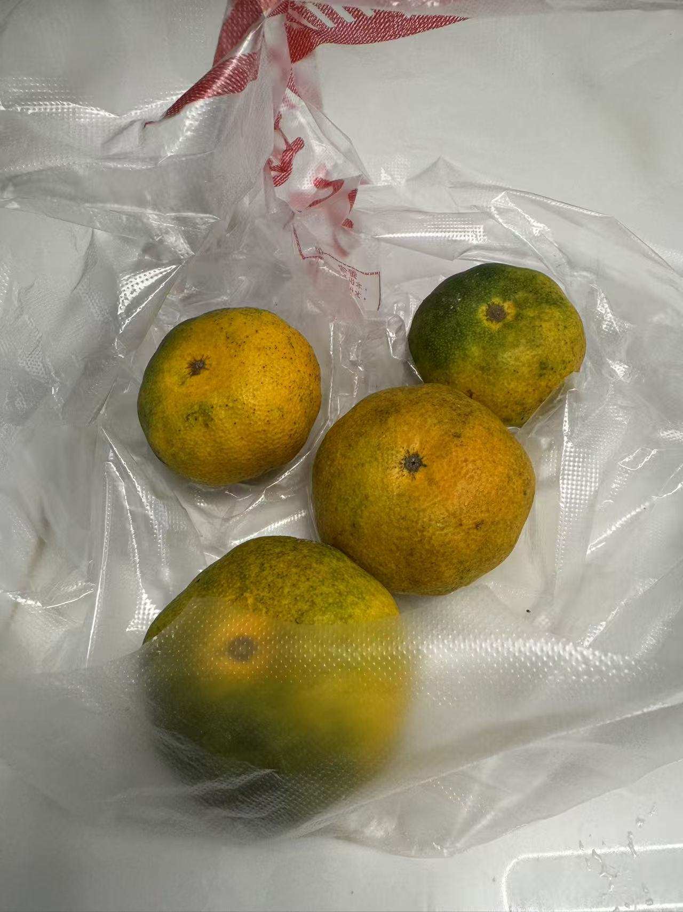
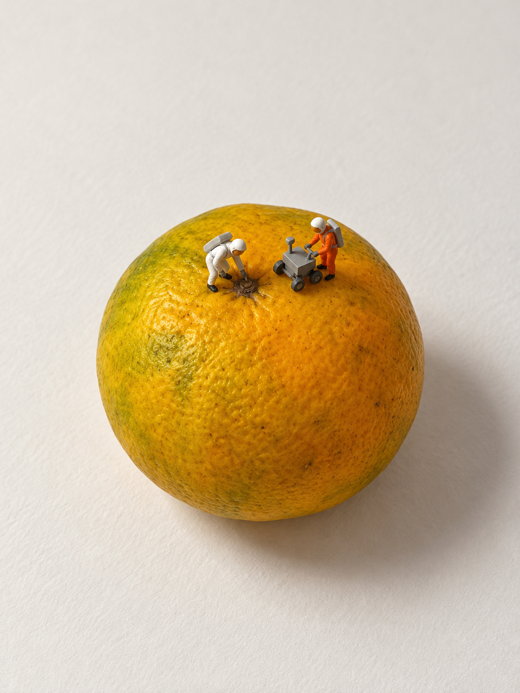
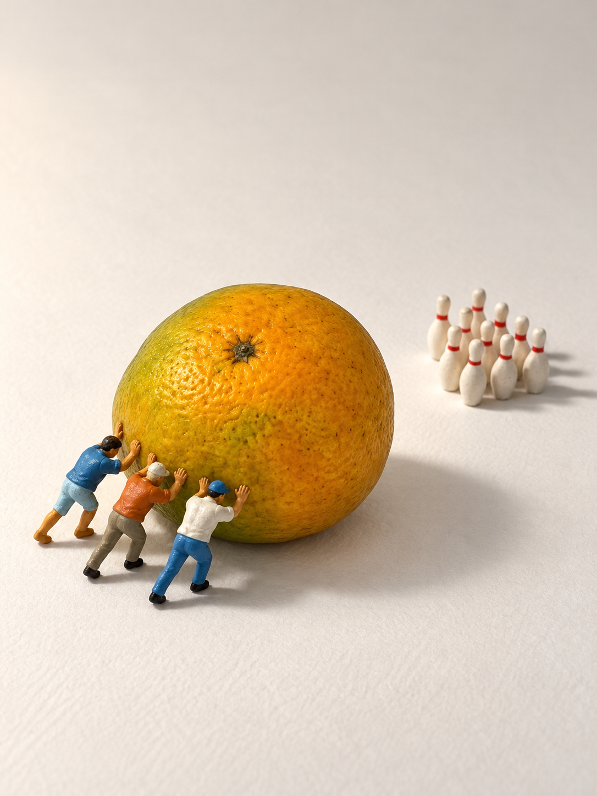

AI 微缩摄影 Skill · 实拍创作教程
一颗橘子，
一场行星考察。

把日常实拍变成小世界，
再用一句反馈调好人物大小。
你提供素材、选择想试的方向；Skill 找联想、安排场景，再根据实际成图处理具体反馈。这次先做两案比较，随后只编辑 A。
“大小合适 故事清楚”
用户对 A 编辑版的最终评价 · 对话摘录实际总计：2 次初始生成 + 1 次编辑 · 0 重试
看这次怎样完成 ↓这是一次真实迭代，并非首图就通过。认可范围为 A 的人物大小与故事清晰度。
01 / 从日常实拍选材
先有素材，再找到橘子的另一种身份。


用户做什么
提供一组日常物件实拍素材，希望选新物件试创意。
Skill 做什么
查看素材后选择橘子，从圆形轮廓、斑驳果皮和浅蒂痕提出两个方向：A 把橘子读成待考察的行星；B 把它读成推不动的巨型保龄球。
橘子由 Skill 从素材中挑选，不是用户一开始指定。两案使用同一商品原照和同一张实拍人偶涂装参考；人偶参考只提供模塑造型与涂装，不提供商品比例。
02 / 两个方向，都实际出图
先比较故事，也看见大小问题。
用户做什么 要求 A/B 两案 PK，批准各 1 次初始生成、0 重试。
Skill 做什么 分别写场景提示，实际传入参考图，各生成一张，保存原结果供比较。




“两个都有一些意思”
“行星考察的还可以再小一点，保龄球的明显偏大了”
用户看过两张初图后的反馈 · 对话摘录两案创意方向获得初步正向反馈，不等于两张整图通过。画幅、背景与参考相同，但场景、人物和机位不同，不作为严格单变量实验。
03 / 只改一个已选方向
缩小人物和车，保留整颗橘子的取景。
用户做什么 批准 A 现图编辑 1 次、0 重试。
Skill 做什么 把 A 原图作为编辑输入，一起缩小两个人偶和探测车，协调彼此比例，保留原动作与果皮区域；要求橘子、机位、留白和光线尽量保持。

“大小合适 故事清楚”
用户对 A 编辑版的最终评价 · 对话摘录到这里，本轮收住。没有为补过程截图重新生成，也没有继续编辑 B。
本页对话均为保存记录中的文字摘录，不是聊天界面截图。
你也可以这样开始
给照片，
给具体反馈。
用户做什么 提供清楚、完整且有权使用的实拍照，说明先看方案还是直接生成；看图后指出哪个关系或人物大小需要改。
Skill 做什么 依据实物形态找场景，明确每张参考的用途，出图后对照商品、动作与人物大小；需要编辑时保留原版。
可复用请求：从这些日常实拍里选一个物件，给我两个有意思的微缩摄影方案，先不生图。
可复用反馈：选 A，人物和配套道具再小一些，保留物件、机位和构图。先说明要怎么改。
这是使用示例，不冒充本次用户逐字指令。生成和编辑取决于当前宿主是否支持图片输入与相应工具。
保留不足，才知道这次验证了什么。
A 的已知限制：编辑后果皮局部纹理、蒂痕邻域和阴影细节有重绘，不能宣称商品逐像素保持原样。B 的已知限制：人物仍明显偏大，原图保留，未修正。
最终评价只认可 A 编辑版的人物大小与故事清晰度；商品保真、涂装、美感没有因此被追加为全部通过，也不证明所有物件都能稳定成功。
实拍原照及三张成图经用户授权在本项目公开展示；不自动采用 MIT，不提供额外商业使用或再分发许可。素材来源与许可说明。